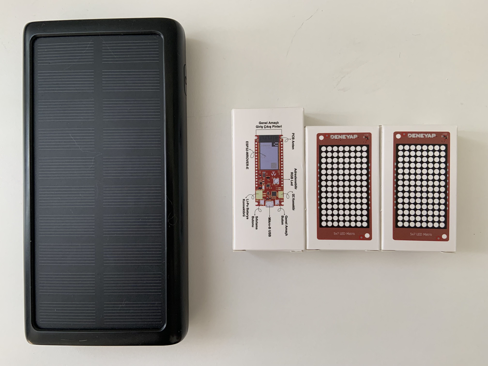
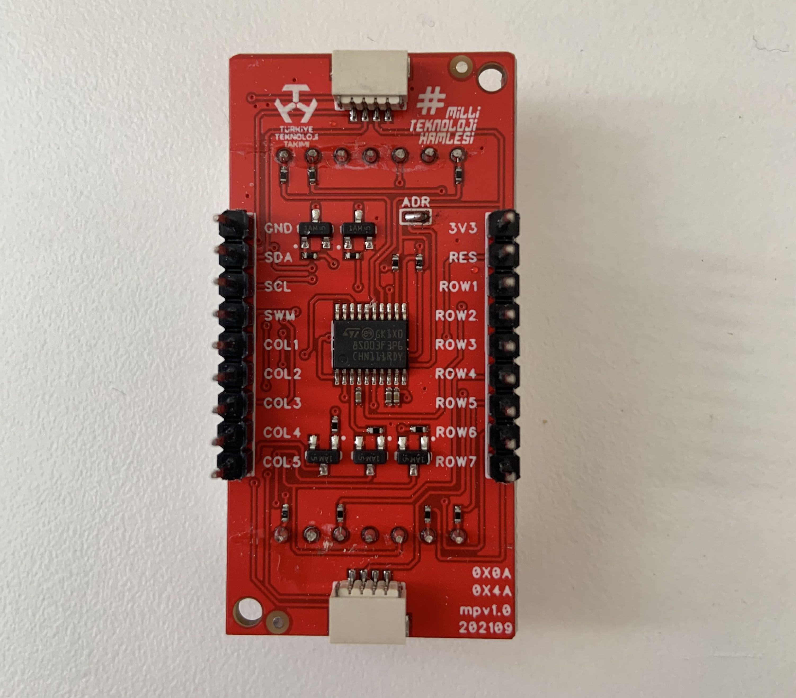

Bisiklet / Skutır Dönüş Sinyali
Gerekli Malzemeler
Donanım gereksinimleri özetle aşağıda listelenmiştir.
- 1x Herhangi bir Deneyap Kart
- 2x Deneyap LED Matris (M34)
- Powerbank ya da Aspilsan Lityum İon Pil, voltaj düzenleyici, 1S BMS modülü
Not: Bileşenleri birleştirmede gereken araçlar listelenmemiştir (ör. lehim aleti).

Talimatlar
Kurulum talimatları özetle aşağıda listelenmiştir. Giriş seviyesi elektronik, orta-ileri seviyede yazılım bilgisine sahip olduğunuz varsayılmaktadır.
- LED Matris modüllerinden birinin üzerindeki adres padlerini lehimleyin.
- LED Matris modülleri ve Deneyap Kartınızı modüller ile beraber gelen I2C kablolarıyla birbirine zincirleme bağlayın.
- KoyuBulut kullanıcı envanterinizdeki kullanma kılavuzu içerisindeki örnek kodu buradaki talimatları takip ederek kartınıza yükleyin.
- Bilgisayarınızdan Deneyap Kart'ınızın oluşturduğu wifi ağına (erişim noktası) bağlanın. Bu wifi ağının adı ve şifresi yüklediğiniz kodun içerisinde mevcuttur.
- Bir tarayıcı ekranı açılıp size kartı hangi wifi ağına bağlamak istediğinizi sormazsa kendiniz bir tarayıcı açıp 192.168.4.1 adresine ilerleyin ve burada kartın esas bağlanmasını istediğiniz wifi ağını seçin (ör. telefonunuzun kişisel erişim noktası)
- Kartın üzerindeki yeniden başlat butonuyla kartı yeniden başlatın.
Tebrikler 👍 kartınız internete bağlı olduğu müddetçe KoyuBulut kullanıcı envanterinizdeki butonlar ile dönüş sinyali verebilirsiniz.

(eklendi: 26.09.2023 | güncellendi: yok)